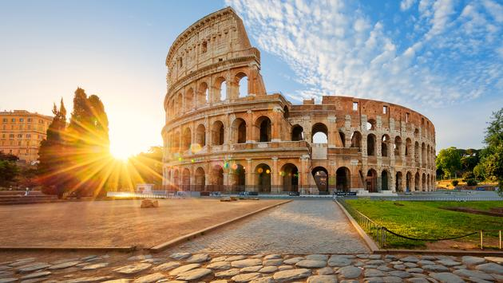

My Family
First and foremost, I am a family man. I believe to my core that family over everything. I have even been nicknamed "Dom Toretto" before because of the amount of love and loyalty that I show to my family. I do not currently have my own family, but hope to soon obtain one. The family that I come from would be considered large outside of my church. It consists of my parents, two older sisters, one older brother, and two younger twin sisters. My two oldest siblings (oldest sister & brother) both have their own kids. Their families consist of, starting with my oldest sister, one son and two daughters. My older brothers family consists of one girl and one boy. They are all crazy. Although they are crazy, I love them.
My Hobbies
Anyone who knows me, knows that I love playing sports. When it comes to sports, I do anything remotely related to what would be considered a "sport" I use sport loosely because some consider an eating competition "sport". I would have to agree. My love for athletics began when I was a child of 3 years. It all began with USC. My brother was enthralled by this college football team known as USC. I had no clue what that meant, but I knew how happy it made my brother. I slowly became more and more interested in not only USC, but in this game known as "football". I soon started playing little league football and loved it. Then from that it went to basketball. Then from basketball, tennis. From tennis to track & field. Loving and learning every sport I played, that brings me to today. I am an old retired high school basketball player. My body is slowly breaking down, but my spirit will never be conquered when it comes to sport.
My Dreams
Have you ever had a dream? I think we all know that line from the movie "Tangled". But seriously, have you? I know I have, and do. I actually have more then one. Consider this my makeshift bucketlist. As you now know, I absolutely love sports. One of my dreams would be to become a high school basketball coach. More specifically, my dream would be to go to a high school basketball program that has a history of losing, and then help make that program into a winning one. Another one of my dreams would be to live in a foreign country with my family. Since my mission, I have been enamored by different cultures and people. So much so, that I have learned Spanish & Portuguese in order to communicate with these people. I think it would be a great experience for not only myself but it would be an enriching experience for my future kids. Obviously, it would be difficult for them at first, but with time they would learn to appreciate and love what they have been given.
